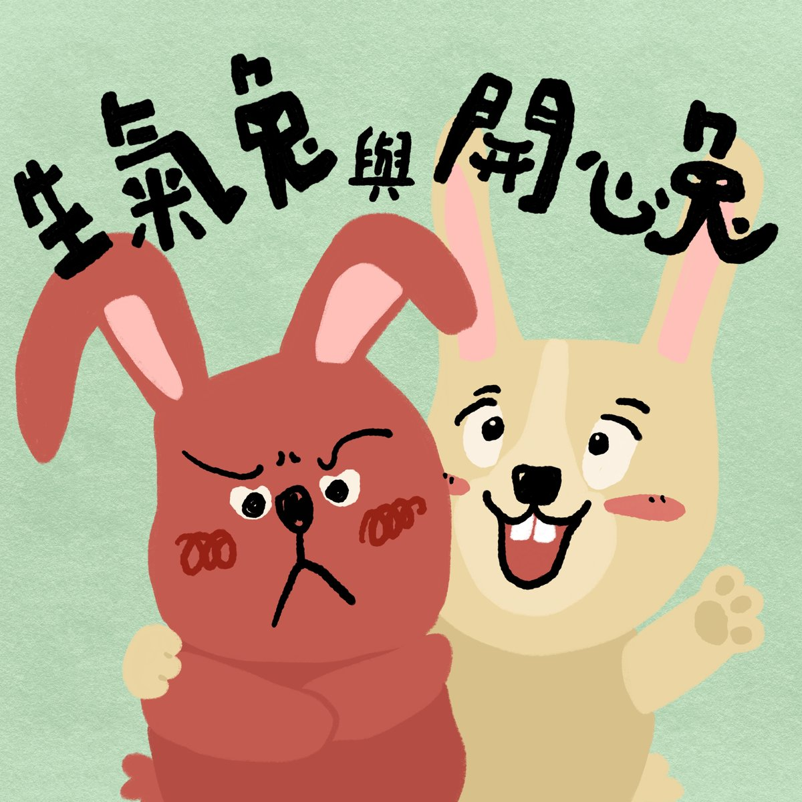

完整版廣播劇，含配音與音效，供角色聲音表情參考。
生氣兔和開心兔是住在兔子山腳下的好朋友。聽說山上新開了一間紅蘿蔔餐廳，兩人相約一起上山吃大餐。
一路上，生氣兔接連被石頭絆倒、踩進小溪弄濕鞋子、帽子還被大風吹走，每一次都氣得跳腳，覺得全世界都「故意」跟他作對；開心兔則總能換個角度想——把石頭搬開、脫鞋泡泡腳、追帽子當賽跑——讓倒霉事變成好玩的事。
沒想到抵達餐廳時卻空無一人，生氣兔氣得掉頭就走。留下來的開心兔這才發現，原來老闆農夫兔正在菜園裡，跟一根拔不出來的超巨大紅蘿蔔奮戰……一場香噴噴的紅蘿蔔大餐，最後能不能讓生氣兔也笑出來呢？
哈囉，我們來一起說故事囉！今天要說的故事叫做《生氣兔與開心兔》，改編自芯語和銘軒提供的故事。
在兔子山的山腳下，有兩棟白色的小房子，這兩棟小房子分別住著生氣兔和開心兔，他們兩個是非常要好的朋友。
有一天晚上，開心兔打電話給生氣兔。
生氣兔：喂？
開心兔：喂？晚安啊！生氣兔！
生氣兔：晚安啊，開心兔，有什麼事嗎？
開心兔：聽說山上要開一間新的紅蘿蔔餐廳喔！餐廳的主人是農夫兔，他會用他從菜園裡剛拔出來的超好吃紅蘿蔔，做出新鮮美味的料理！
生氣兔：哇！聽起來很棒耶！
開心兔：一定很棒啊！我們明天一起去吃好不好？
生氣兔：好啊！
開心兔：那明天早上在我家集合，我們一起出發。
生氣兔：沒問題！
第二天早上，開心兔在家裡等了好久，都等不到生氣兔。
開心兔：奇怪，生氣兔怎麼還沒來呢？
開心兔決定去找生氣兔，他在前往生氣兔家的路上，看到了——
生氣兔：可惡！可惡！臭石頭！故意在這裡絆倒我！
生氣兔用力地踢路上的石頭！
生氣兔：哎唷！好痛！臭石頭故意絆倒我、害我生氣，然後踢得我腳很痛！可惡！
開心兔趕快跑去拉住生氣兔，他說
開心兔：好了好了，繼續踢石頭，會讓你的腳更痛，不是嗎？我們把石頭搬到旁邊，這樣回來的時候才不會又被絆倒。
生氣兔覺得開心兔說得有道理，（兩兔：嘿咻——）於是他們合力把石頭搬到路邊的草叢裡，生氣兔變得比較開心了。
他們開始爬山，邊走邊想，紅蘿蔔餐廳會有什麼好吃的料理呢？
開心兔：應該會有紅蘿蔔派！
生氣兔：還會有紅蘿蔔濃湯！
開心兔：如果有紅蘿蔔麻糬就好了！
生氣兔：麻糬！！好棒喔！
生氣兔興奮地跳起來！（踩到溪水裡）糟糕，他一不小心，踩到小溪裡，把鞋子都弄濕了！
生氣兔：可惡！可惡！臭小溪！故意在這裡把我的鞋子弄濕！（一直踩水）
生氣兔生氣地在小溪裡跺腳，濺起的水花快把衣服也弄濕了。開心兔趕快跑去拉住生氣兔，他說
開心兔：好了好了，繼續踩水，到時候連衣服也濕掉。沒關係，我們把鞋子脫下來曬太陽，一下就乾了，趁這個時候坐下來休息，把腳泡在小溪裡，不是很舒服嗎？
生氣兔覺得開心兔說得有道理，於是，他們把鞋子脫下來曬太陽，把腳泡在小溪裡踢踢水，他們都覺得好舒服，生氣兔變得比較開心了。
等到他們曬乾鞋子、休息夠了之後，生氣兔和開心兔繼續爬山。他們經過一片大草原，突然，一陣大風吹來，把兩隻兔子的帽子吹走了！
生氣兔邊追著帽子邊喊
生氣兔：可惡！可惡！臭風！故意把我的帽子吹走！！
開心兔也邊追著帽子邊喊
開心兔：沒關係，我們剛剛休息夠了，現在剛好可以跟帽子賽跑，不是很有趣嗎？
生氣兔覺得開心兔說得有道理，他們一起在大草原上跟帽子賽跑，最後撿回了帽子，牢牢地戴回頭上，生氣兔變得比較開心了。
他們繼續前進，終於到了新開的紅蘿蔔餐廳，可是，不知道為什麼，餐廳裡一個人也沒有，開心兔和生氣兔等了半天，都沒有看到餐廳老闆農夫兔。
生氣兔：可惡！可惡！臭餐廳！根本就沒有開，故意害我走這麼遠的路！為什麼大家都故意要對我這麼壞！！！
生氣兔好生氣，他扭頭就走，開心兔根本來不及安慰他。
開心兔：欸⋯⋯生氣兔⋯⋯等一下啦⋯⋯
生氣兔一下子就跑掉了，只剩下開心兔在餐廳前面，他抓抓頭
開心兔：真奇怪，為什麼農夫兔不在呢？
就在這個時候，開心兔聽到有人講話
農夫兔：欸？開心兔你來啦，太好了太好了！正好來幫我的忙！
開心兔轉頭，看到滿頭大汗的農夫兔！原來，農夫兔在菜園裡種出了超級超級大的紅蘿蔔，他拔了好久好久，還是拔不出來。
於是，開心兔跟著農夫兔到菜園，他們一起拔蘿蔔。（兩兔：嘿咻、嘿咻、嘿～～～～咻）他們真的拔出了超級超級超級大的紅蘿蔔！
農夫兔：真是太感謝你了，開心兔，讓我用這個超巨大紅蘿蔔做出一桌美味的料理當作謝禮吧！
開心兔：真的嗎？那真是太好了！！
開心兔開心到耳朵都豎起來了！但是，他突然想到一件事⋯⋯
開心兔：呃，我可以找我的朋友來吃嗎？
農夫兔：當然可以呀！
聽到農夫兔這麼說，開心兔立刻跑回山下，他經過了大草原，跳過了小溪，他想跑去生氣兔的家，可是，在路上他就遇到生氣兔了。
生氣兔：可惡、可惡的臭石頭！ㄠ～我的腳好痛、可惡、可惡
生氣兔又在踢石頭了。
開心兔：咦？奇怪，我們早上不是把石頭搬到路邊了嗎？為什麼你又被石頭絆倒了呢？
生氣兔：沒有啊，我沒有被石頭絆倒。
開心兔：那為什麼你要踢石頭？
生氣兔：因為餐廳沒開，我很生氣，所以我想回家，在路上我就覺得好生氣，想要踢東西，然後我想到我家的路上有一顆石頭可以踢，我就覺得有點開心，可是經過的時候發現石頭在路邊的草叢裡，我居然還要把它搬回路上才能踢！我真是太生氣了！石頭就是故意跑到草叢裡，害我還要把它搬出來踢！！！然後踢了腳又很痛！！！可惡的臭石頭！！
開心兔看到生氣兔氣成這樣，忍不住笑了出來
生氣兔：你在笑什麼？你在笑我嗎？
開心兔：沒有啦～你不要再踢石頭了，這樣腳很痛，你跟我回去山上，農夫兔要煮大餐給我們吃！
聽到有大餐，生氣兔的耳朵都豎起來了，他跟著開心兔一起爬山，這次，他有注意不要跳到小溪裡，經過大草原的時候，也記得用手壓著帽子，不讓大風吹走。生氣兔和開心兔又回到了紅蘿蔔餐廳。
生氣兔、開心兔：哇～～～～
農夫兔煮了一頓紅蘿蔔大餐
開心兔：紅蘿蔔派！
生氣兔：紅蘿蔔濃湯！
開心兔：紅蘿蔔炒飯！
生氣兔：紅蘿蔔蛋糕！
農夫兔：還有喔——
開心兔、生氣兔：紅蘿蔔麻糬！！！！太棒了～～
開心兔和生氣兔吃著美味的食物，他們都很開心。開心兔邊吃邊說
開心兔：今天真是完美的一天！
生氣兔也邊吃邊說
生氣兔：這個紅蘿蔔一定是故意要長這麼大、害農夫兔拔不出來、害我以為餐廳沒開然後生氣！可惡，真是個臭蘿蔔！
開心兔：嗯？臭蘿蔔哪有這麼好吃？明明就是香蘿蔔！
生氣兔：對吼！可惡，他故意長得這麼香，害我說錯！臭香蘿蔔！
開心兔：哪有這種東西啦哈哈哈哈
生氣兔：哈哈哈哈哈
開心兔笑了，生氣兔也笑了，生氣兔喜歡跟開心兔一起玩，因為他們可以一起變得很開心。
這就是今天的故事《生氣兔與開心兔》，感謝芯語和銘軒的提供喔！